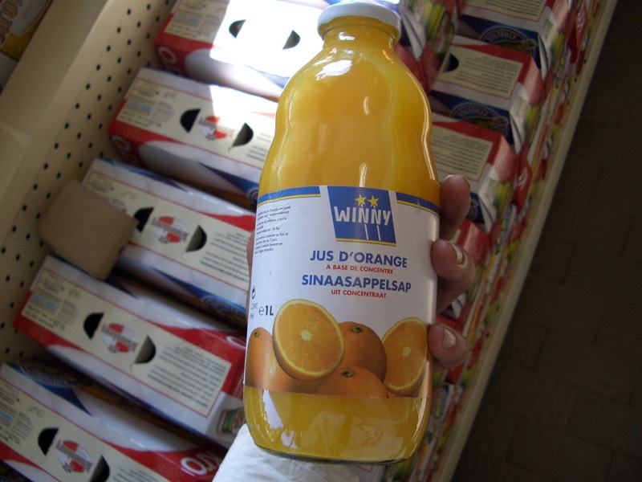

半夜雖然冷到叫人四肢僵冷，但好處就是傷口居然一點痛的感覺也沒有。
不想辦法睡覺的話，明天一定沒有精神騎車回巴黎，就算騎直線回去，也是一段不遠的路呀。
躺在漆黑的加油站，既然冷的睡不著，就開始想些有的沒的。
真的要騎腳踏車回去嗎？會不會太辛苦了一點？摔車了耶？還是搭火車好了，別太勉強自己。
放棄騎車的理由，從出發到現在，有千千萬萬種，車子故障、生病、沒現金、迷路、馬路不給走、
雨下個不停、露宿街頭、摔車、高溫的太陽、想家、肚子餓、疲累、厭煩、不爽、無力.....
隨時隨地，不想騎了，就是不想騎了，不會有人勸我說再堅持一下就可以完成了。
因為這是自己跟自己的旅行，所有做的決定都是自己跟自己的妥協，也是自己跟自己的約定。
沒有人逼你做任何事情，只有你想做或是不想做，所有的藉口都是推托的理由，沒必要找藉口給自己。
因為藉口是說給別人聽的，將自己的懦弱合理化。不想做的人明明是自己，為什麼還要跟別人說理由呢？
難道能得到別人的支持去放棄一件事情會比較好嗎？
當兵的時候，有些軍中的人知道我退伍要來騎腳踏車環法，沒有人相信我能真的完成，甚至連出發的可能性都沒有。
我的想法是『就算所有的人都支持我、肯定我，可是若我不去實現的話，也沒有用。』
反過來說『就算所有的人都否定我、譏笑我，但我相信自己能完成，它就不是空想。』
『夢想』不能只是夢，也不只能有想。兩個字合起來的意義，是一個給自己的目標，設法去完成它，不論有天大的困難。
想著想著，居然又重新睡著了.......
八點整，在各式各樣的蟲鳴鳥叫聲中醒來，天亮了之後，氣溫開始回升，趁著天候涼快，準備回程吧。
在第一家看到的麵包店買了早餐果腹
超好吃的甜甜圈，才0.85歐元，這個真的很讚
酥軟牛角麵包，0.7歐元，不知不覺就買了一個名產早餐
還有看起來很好吃的小熱狗披薩（最右邊那個）買了之後拿去微波爐加熱後吃，2歐元
也很幸運的，一大早就發現可用的水龍頭，猛灌了開水，避開手上的傷口，洗把臉，恢復精神。
把兩個水瓶都裝滿水，肚子吃飽了，水分的供給也不成問題，安心的騎車吧。
一路上都看到結滿了蜘蛛網，壯觀的有點恐怖，到底這邊有多找蜘蛛呀 @@"
由於睡醒之後沒有辦法做任何的傷口包紮動作，另一方面也很怕痛，所以就放著不管它。
這樣騎車居然也沒什麼影響，右腳還是可以騎，只是左手要小心不要靠到手把就好。
本來以為受傷騎車會是很艱苦的事情，但真的沒什麼影響，只是看起來稍微髒兮兮了一點。
在這樣的狀態之下，第一天回程也騎了160幾公里的路。
由於iPod一直都處於沒電所以沒歌可以聽的狀態，一般來說這樣會覺得時間過的比較漫長，
可是卻也沒想像中那麼樣的無聊，大概是知道旅行要結束了，處於回程的心情，比較平靜的緣故吧。
綠油油的小徑桌布
如果沒摔車，是要沿著N74公路，一天內長騎180公里到南錫這個地方。
摔車了，就繞路吧，走分叉的D27->D3->D595->D928。
列出這些路名，對於手上沒有法國地圖的人來講，一點意義也沒有，只是數字而已。
可是說不定將來會有人跟我一樣的迷路，就可以走一樣的路。
早上十一點多，在荒郊野外，跟大自然相處，肌膚之親，同時給予樹木充足的肥料當養分。
請原諒我真的要講的這麼樣的繞舌，因為要我直接講出我在郊外拉屎，實在有些難為情。
中午時分，到小小鎮（VOULAINES LES TEMPLIERS）的迷你餐廳吃了午餐。
掌廚就是夫妻中的太太，服務生就是先生，除了招呼我吃飯之外，他還要逗著剛出生的小孩，好可愛∼
因為傷口不疼的緣故，騎久了都忘了自己受傷的這件事情。
吃飯吃到一半，太太拿出了酒精跟棉花球給我，愣了一下不知道這個要幹嘛？
太太指了指我腳上的傷口，才知道原來是要給我擦藥用的。
怕痛也沒有辦法 >"< 用棉花球沾著酒精把腳上的傷口清理一下，既清涼又刺痛。
午餐先開一瓶可口可樂潤潤喉∼
前菜沙拉有生菜、番茄、白煮蛋+美乃滋、紅蘿蔔跟類似胡瓜的東西。
主菜亂點，看到菜單上有Dijon，想說可能是這邊的地方菜，送上來一盤香腸淋上醬汁。
香腸應該是煎過的，所以沒那麼生，裡面是碎肉構成，所以也沒那麼硬，醬汁有淡淡的芥末味道，很好吃。
甜點是老闆推薦的，梅子蛋糕之類的東西
酸酸甜甜的蛋糕，配上一整盤的櫻桃醬，吃完之後臉紅紅。
吃午餐的時候，太陽正大著，在店裡休息了一會，借了插頭把昨天的文字遊記加上照片弄成網頁。
等到了比較大的城市，找到網路可以用之後，就上傳吧∼
後來又想到上傳摔車遊記，台灣方面又要擔心，還是一次上傳兩天份，一天摔車，一天平安，會比較好。
喝著咖啡，把遊記後製弄好，兩點離開餐廳，結帳時付了12.5歐元，相當便宜。
繼續走小路往西北方移動，總算在下午三點半，離開D開頭的小徑，接上N71公路。
此時已經騎了90公里，距離今天的目標城市卻依舊還有67公里，有點遠，也有點無力∼呼
像沙漠的地方，其實是犁完田的農地，不知會長出什麼作物來。
下午五點，買一瓶橘子汁，補充水分也補充維他命C，整篇遊記最常上鏡頭的左手，現在要遮遮掩掩了，1.4歐元

下午七點剛過，到了回程的中繼站，特瓦。
稍微晃了一下之後，還是專心的找旅館休養比較重要。
火車站附近找到一間24小時營業的旅館，最便宜的房間是28歐元。
不是那個像監牢的地方啦，今晚就住這邊了，卸下沈住的行李，活動一下腰痠背痛的筋骨，處理一下傷口吧∼
洗澡的時候要很小心的避開傷口直接碰到蓮蓬頭水柱，之後乾脆用擦澡的方式就算洗好了。
走出旅館想找間藥局買個紅藥水跟紗布包紮一下，看到天橋下跑來跑去的火車，心中又起了搭火車回巴黎的念頭。
今天騎160公里到特瓦，說是中繼站，明天再騎回巴黎，可是比今天騎的還要更遠，兩天都這麼趕路，很拼呀 /_\
夕陽再度西下，好消息是，已經找到過夜的地方了，此時此刻正穿著藍白拖鞋在些上找東西吃。
找不到藥局，算了，吃點營養的也能幫助恢復。
氣氛很好的小餐館，連客人都特別美麗。
繼續為難服務生『吃什麼都沒關係，請送上你覺得好吃的東西 :)』看他抓抓頭，很頭痛的樣子，真是過意不去。
喝了顏色很漂亮的玫瑰葡萄酒，幾乎沒有酒味，很像果汁一樣，很好喝，冰冰涼涼可以裝兩杯，才3歐元。
前菜吃小盤的開胃沙拉
主菜是貓耳朵麵配上乳酪醬，口感不錯，既清淡又濃郁。
甜點是巧克力+香草冰淇淋，擠上鮮奶油加巧克力粉，撒上杏仁片，再加一根餅乾∼
因為點菜的方式很麻煩別人，所以吃完飯給了零頭當小費，付了18歐元。
回旅館時將近十點，本來想寫今天的遊記，但被無窮無盡的疲勞給打敗了，連動動手指頭打字都沒力。
明天真的能騎回巴黎嗎？還是搭火車回去吧，我是傷患耶∼
這樣想之後稍微覺得明天的行程輕鬆許多，所以今晚睡得跟豬一樣。